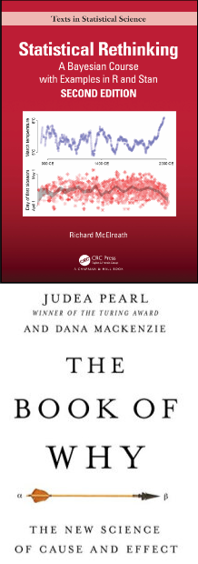
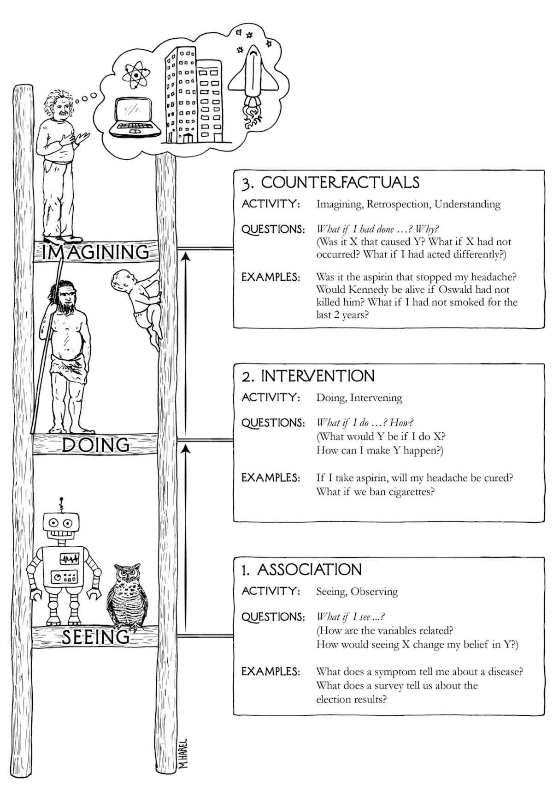
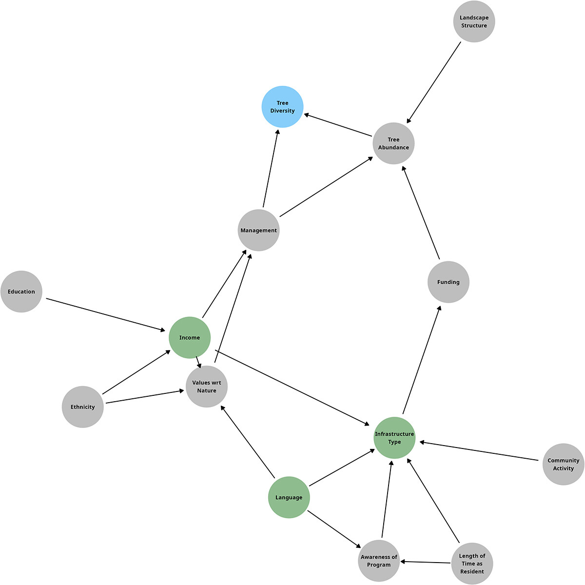
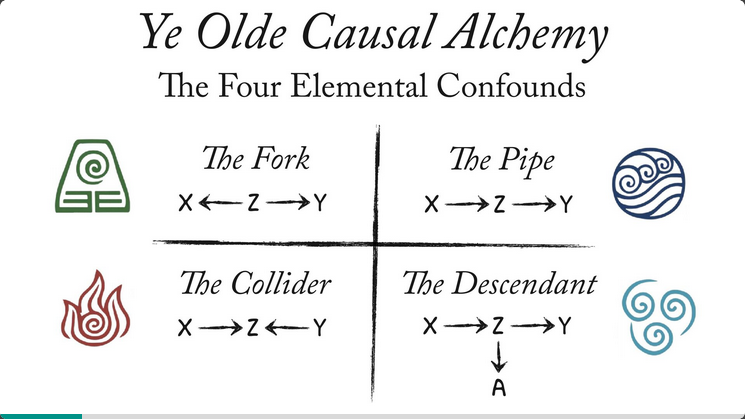
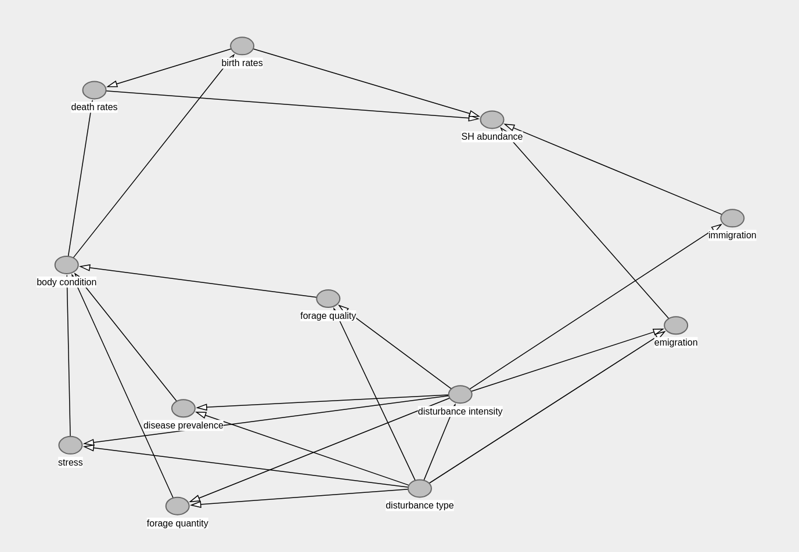
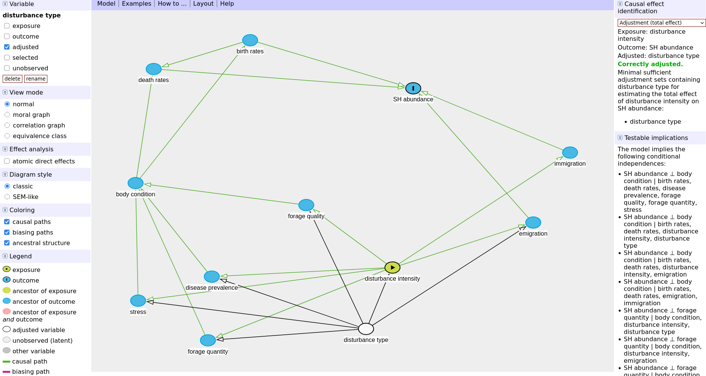
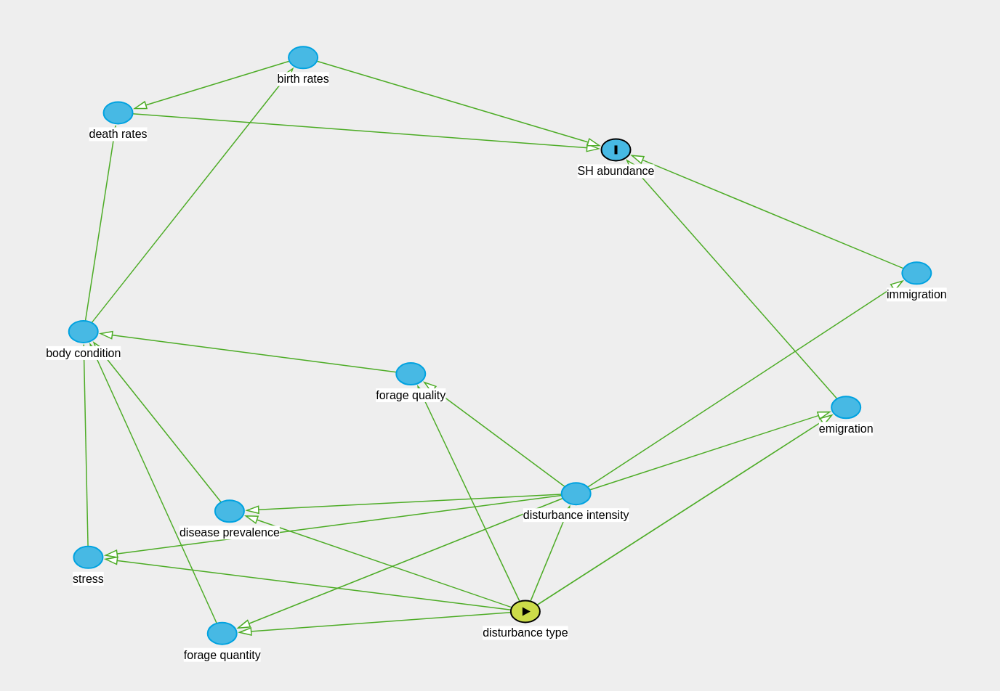
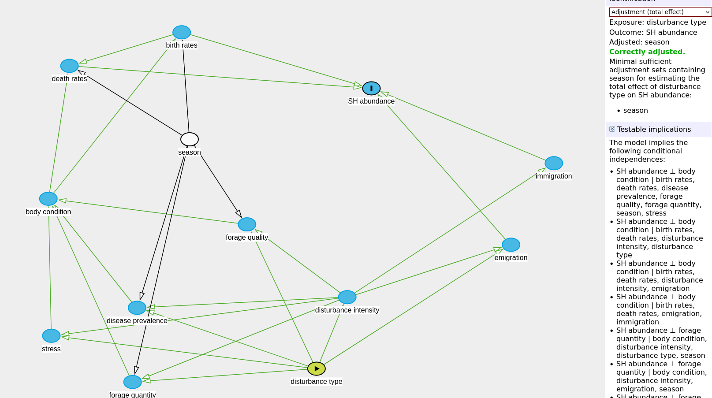

2026-08-17

the beauty of causal inference is that it relies on concepts that come very naturally to the human brain and is founded on using the expert scientific knowledge that every scientist brings to their studies
THIS DOES NOT CHANGE EVERYTHING - just gives you a framework to easily express what you already feel and know
Pearson & Galton, founders of modern statistics, failed in creating the tools needed for causal inference and subsequently decided that it was impossible and “unscientific”
Judea Pearl invented the math required to answer causal questions only ~ 40 years ago! Science is slow!
causation is not controversial - we are just transitioning

if we want to use our models to estimate data in places or times that we do not have data for, but we DO NOT CARE about the relationships between the things in our model, that is prediction and not causal inference
prediction is cool!! it is separate from (and mathematically at odds with) causal inference
AIC is a tool for measuring the predictive power of your model - it is not appropriate for causal inference
NOTE: causation vs prediction is a difference in approach and philosophy, but there is overlap in tools (e.g., you may use a “predict” function in R to generate a causal effect size)
read the literature, develop hypotheses and understanding of the system
develop research question(s) of interest
build a DAG** representing the system (step repeated many times after discussions with collaborators, co-authors, etc)
identify data required to answer questions of interest
collect data
build statistical models to test question
report DAG + results
“directed acyclic graph” - relationships go in one direction
arrows indicate a causal relationship from one variable to another
use your expert knowledge + literature to outline your system with your hypotheses and assumptions (you already make assumptions now, you just don’t visualize them!)
decide what variables you need in your statistical test (e.g., model) using your DAG


!!! I am not a mammologist !!!

Q1: What is the effect of anthropogenic disturbance on snowshoe hare abundance?

Q2: What are the effects of different disturbance types?


variables that do not have shared causes in your system do not need to be included - your DAG does not need to include every variable in the world
do NOT exclude variables just because you haven’t measured them, these are still potential confounders and need to be part of your DAG!
Metrics =/= causes, use the process/mechanism and not the metric that you measure (e.g., veg abundance causes a difference in temperature, not NDVI)
you are an expert with good intuition and expertise, don’t be scared to put your assumptions down on paper
presenting the assumptions you are making about your system is good, transparent science and allows the development of the field